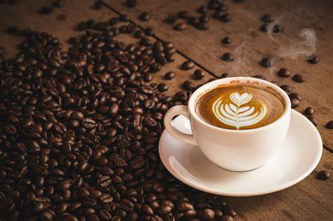

来杯咖啡 |
|

拿铁“拿铁”不是咖啡 其实，拿铁（Latte）在意大利语里是“牛奶”的意思，如果你点一杯“拿铁”，那么服务生只会给你上一杯牛奶。而意大利语的Caffè Latte指的才是拿铁。现在很多冷饮店都会推出自己的“拿铁”系列，像“红茶拿铁”“抹茶拿铁”等等，其实就是奶茶而并没有咖啡的成分。 拿铁咖啡是意大利浓缩咖啡(Espresso)与牛奶的经典混合，意大利人也很喜欢把拿铁作为早餐的饮料。意大利人早晨的厨房里，照得到阳光的炉子上通常会同时煮着咖啡和牛奶。喝拿铁的意大利人，与其说他们喜欢意大利浓缩咖啡，不如说他们喜欢牛奶，也只有Espresso才能给普普通通的牛奶带来让人难以忘怀的味道。 卡布奇诺20世纪初期，意大利人阿奇布夏发明蒸汽压力咖啡机的同时，也发展出了卡布奇诺咖啡。 卡布奇诺是一种加入以同量的意大利特浓咖啡和蒸汽泡沫牛奶相混合的意大利咖啡。此时咖啡的颜色，就像卡布奇诺教会的修士在深褐色的外衣上覆上一条头巾一样，咖啡因此得名。传统的卡布奇诺咖啡是三分之一浓缩咖啡，三分之一蒸汽牛奶和三分之一泡沫牛奶，并在上面撒上小颗粒的肉桂粉末。 美式咖啡“美式咖啡”（英文：Americano，意大利语：Caffè Americano）咖啡的一种，是最普通的咖啡。是使用滴滤式咖啡壶所制作出的黑咖啡，又或者是意式浓缩中加入大量的水制成。 美式咖啡口味比较淡。因为一般的萃取时间相对较长（大概四五分钟），所以咖啡因含量较高。 橘金汽泡水苏打水是碳酸氢钠的水溶液，可以天然形成或者用弱碱泡腾片、苏打泡腾片以及机器人工生成。苏打水含有弱碱性，医学上外用可消毒杀菌。 天然苏打水除含有碳酸氢钠外，还含有多种微量元素成分，因此是上好的饮品。 |
|
| 版权所有 © 小刘 | |